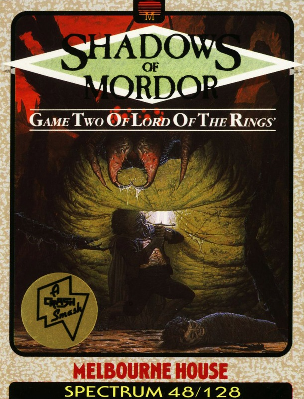
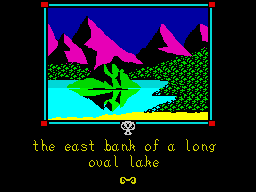

The Shadows of Mordor


{kind=link}

| Publisher: | Melbourne House |
| Price: | £7.95 |
| Year: | 1987 |
| Source: | CRASH, Issue 41 |

The biggest software releases in adventure gaming are those based on the works of JRR Tolkien, for their source material is derived from the greatest set of fantasy books ever written.
The Hobbit told the story of Bilbo Baggins and how he was unwittingly thrown into the world of darkness and danger far from the cosy tunnel he had known in Hobbiton. Bilbo eventually began to enjoy his exotic sojourns, along with the treasures and skills he had amassed, and this enthusiasm for adventure, peculiar among home-loving Hobbits, transferred itself to his young and impressionable cousin, Frodo. The Lord of the Rings trilogy of books tells Frodo’s story, and this game being the second computer instalment, it follows the theme of the second book, The Two Towers.

The computer game is titled Shadows of Mordor which probably reflects the adventure’s desire not to be thought a rerun of the book, but a game more loosely based on that work and only keeping to the essential atmosphere of Middle Earth. They take another chance to distance themselves from the awe-inspiring and critical task of transposing Tolkien’s masterpiece to the microcomputer in the style of the instructions, which have taken on a whimsical and self-deprecatory air. Have a look at this line from the introduction: ‘The Shadows of Mordor is a brilliant piece of fantasy software thanks to the reworking of many of the game’s systems by a highly trained team of idiots’.
If the intention is to show the reader that this adventure is, after all, only a game, they can rest assured this style certainly lowers expectations.
Although there are instances of idiocy to be found, let’s not dwell here and instead consider the many fine aspects to this great game.
Gameplay is similar to Lord of the Rings Part One, perhaps too similar for those who weren’t altogether struck by that program’s performance. The programming team saw in that first game advantages in offering complex character interaction and vocabulary handling. Here the characters again are marvellously independent with their own personalities, strengths and allegiances. These characteristics may well influence the kind of response you achieve when conversing with your colleagues and acquaintances using the important SAY TO (GANDALF) construction. The two examples given go some way to indicating the possibilities of interacting with the chief players in the plot: SAY TO SAM 'KILL THE ORC WITH THE SWORD' and SAY TO SMEAGOL 'TAKE THE GOLD FROM THE ORC' (Smeagol is a creature, who like Thorin in The Hobbit, seems to be the total imbecile, forever sneaking off and returning from the bushes). With Sam, you can choose to have him controlled automatically by the computer, in which case he can be asked to perform specific actions by way of the SAY TO SAM construction. Alternatively you can take a more active role by BECOMEing SAM. (note the full stop), which may be of more use when the Hobbits go their separate ways. As with LOR Part One, you must take up this option at the very start of the game, but unlike that first adventure, there appears to be only the two Hobbits available for this scheme, as opposed to the four (Merry and Pippin were the others) in the first game. This necessarily changes the look of the adventure with the layers of pages effect gone, leaving just a band across the top bearing either the name of Sam or Frodo (the default character).
Vocabulary handling has always been a strong point to the big Melbourne House games. Here there’s an 800-word vocabulary of Inglish, the English subset first seen in The Hobbit. Adjectives and prepositions are dealt with as efficiently as the verbs and nouns which form the basis of all mainstream adventure communication. Punctuation and the word AND can allow many instructions to be strung together, and this game boasts the opportunity for the player to give a character a string of commands to act upon immediately. ALL allows an action to affect everyone, including your own character, so KILL ALL should be tempered with BUT FRODO unless things are going particularly badly!
Due to the complexity of the vocabulary your input may have to become quite specific in order to achieve the desired result. In a game which seems to have something for rolling stones you must specify which direction you wish to roll it, otherwise the program assumes north. In another case the program selects a small sword for a task for which it is most unsuited given no alternative specific instructions by the player on which item to employ.
Beam Software have again penned this game, and it has got to be said that the face this adventure presents to the player isn’t that tidy. When you consider the lengths even small software concerns are going to in order to improve colouring and readability of the screen, Beam might be said to be a little Luddite in their attitudes. Thankfully, the classic rounded, compact print famous from The Hobbit is retained (probably the prettiest character set ever to grace the Spectrum screen) and your input is tidily tucked away at the bottom in distinctive capitals, but above is a stark whiteness punctuated by an untidily-scrolling list of happenings. Technically, the game is very slow, with pregnant pauses imposed after just about every decision. And on the bug front, the extremely colourful graphics on the 128K (at least on the copy I was sent) are too fast even to form subliminal images. They’re on and off in a literal flash.
The two major concerns (or shocks) from Part One are still here. The strange non-loading appearance to the loading sequence is retained, as is the need to repeatedly save, because a QUIT or a death requires the whole program to be loaded in again, not something one relishes with a 128K program. It might be worth mentioning here that the 48K version does not have sufficient memory to support graphics.
Shadows of Mordor looks a very interesting game. The test of any game is how easily it entertains and I’ve got to say I really enjoyed reviewing this Melbourne House classic.
COMMENTS
| Difficulty: | No pushover |
| Graphics: | Attractive |
| Presentation: | Average |
| Input facility: | Complex sentences |
| Response: | Slow |
| General rating: | A big game |
| Atmosphere: | 94% |
| Vocabulary: | 90% |
| Logic: | 91% |
| Addictive quality: | 95% |
| Overall: | 93% |